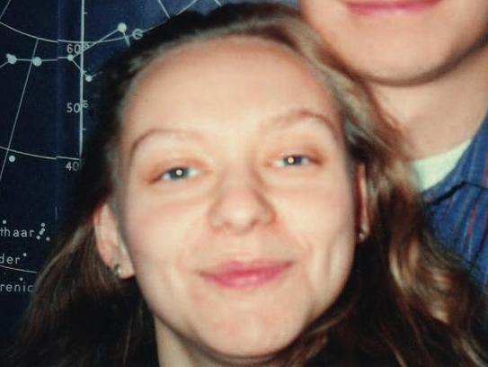

3.04.1976г. — 3.11.2002г.
Улрика Бабьяковá (словацк. Ulrika Babiaková) — словацкий астроном и первооткрывательница астероидов, которая работала в чешской обсерватории Ондржеёв. В период с 1998 по 2001 год совместно с другими словацкими астрономами ею было открыто в общей сложности 14 астероидов.
| Астероид | Дата |
|---|---|
| 15053 Bochníček | 17 декабря 1998 |
| 22185 Štiavnica | 29 декабря 2000 |
| 22644 Matejbel | 27 июля 1998 |
| (49436) 1998 YX2 | 17 декабря 1998 |
| (72062) 2000 YR17 | 24 декабря 2000 |
| (72070) 2000 YC33 | 31 декабря 2000 |
| (82809) 2001 QK33 | 17 августа 2001 |
| (82908) 2001 QU100 | 19 августа 2001 |
| (104650) 2000 GY132 | 9 апреля 2000 |
| (109096) 2001 QJ33 | 16 августа 2001 |
| (123613) 2000 YQ17 | 24 декабря 2000 |